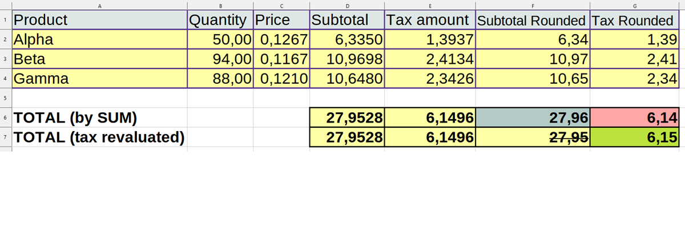

Round taxes to comply italian laws

Arrotondamento IVA per adesione leggi fiscali italiane



This module evaluate invoices taxes to comply italian laws and avoid refuse from Italian Tax Authority.
Odoo standard evaluate tax line by line and at the end sum all values. This behavior produces a little difference between tax evaluated from total base and the sum of taxes.
Look at the following example:
| Product | Quantity | Price | Subtotal | Tax Amoun | Sub.Round | Tax Round | |
| Alpha | 50.00 | 0.1267 | 6.3350 | 1.3937 | 6.34 | 1.39 | |
| Beta | 94.00 | 0.1167 | 10.9698 | 2.4134 | 10.97 | 2.41 | |
| Gamma | 88.00 | 0.1210 | 10.6480 | 2.3426 | 10.65 | 2.34 | |
| TOTAL (by SUM) | 27.96 | 6.14 | |||||
| TOTAL (Revaluated) | 6.15 | ||||||
Odoo return the total base 27.96 (as sum of subtotal rounded)and total tax 6.14 (as sum of taxes) but the total tax revaluate on 27.96 is 6.15
Odoo configuration "Round globally" solve when invoice is created but after update it does not work.

Questo modulo calcola l'IVA della fattura in modo da aderire alle leggi fiscali italiane ed evitare il rifiuto dallo SdI.
Odoo calcola l'IVA riga per riga e al termine somma tutti i totali imponibili e IVA delle singole righe. Questo comportamento produce una picola differenza tra il totale dell'IVA ed il valore dell'IVA partendo dal totale imponibile.
Questo è un esempio:
| Product | Quantity | Price | Subtotal | Tax Amoun | Sub.Round | Tax Round | |
| Alpha | 50.00 | 0.1267 | 6.3350 | 1.3937 | 6.34 | 1.39 | |
| Beta | 94.00 | 0.1167 | 10.9698 | 2.4134 | 10.97 | 2.41 | |
| Gamma | 88.00 | 0.1210 | 10.6480 | 2.3426 | 10.65 | 2.34 | |
| TOTAL (by SUM) | 27.96 | 6.14 | |||||
| TOTAL (Revaluated) | 6.15 | ||||||
Odoo restituisce il totale imponibile 27,96 (come somma di tutti gli imponibili delle righe) e il totale IVA 6,14 (come somma dei totali IVA) ma il totale IVA calcolato da 27,96 è 6,15
Il parametro di configurazione "Arrotondare globalmente" è attivo solo in creazione ma in modifica non funziona.
get_taxes_values()
of the module account. The function, revaluate precisely the tax amound depending on
base amount. This behavior is due to avoid refusing invocie from Italian Tax Authority
which check tax amount MUST be: base amount * tax rate +/- 1 cent
For this reason, this module depends on specific 10.0.1.1.2 version of account
Authors | Autori:
Contributors | Partecipanti:
This module is maintained by the SHS_AV s.r.l..
This module is part of l10n-italy-supplemental project.
Published information on | Informazioni pubblicate: 2024-06-11